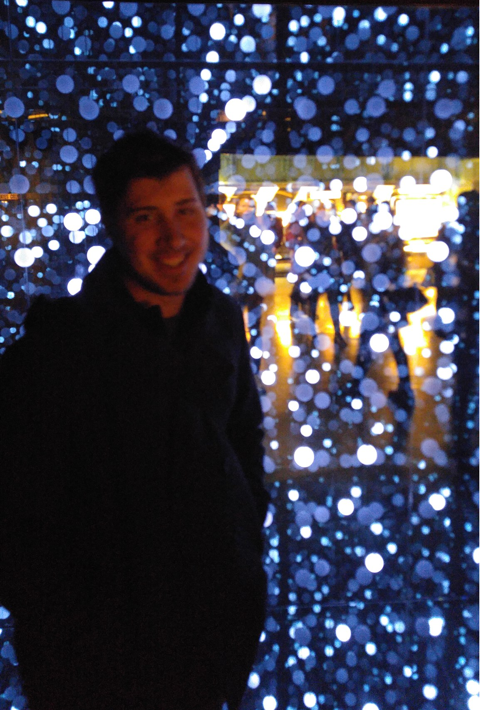

Todd Robbins
An average Dude

I was born and raised in Federal Way Washington, where I developed a strong interest in technology from a young age.
My fascination with computers and problem-solving led me to pursue a career in computer science.
I earned my Bachelor’s degree in Computer Science from the University of Washington Tacoma in 2016,
and later went on to complete a Master’s degree in Computer Science with a focus on Cyber-Physical Systems at the
University of Washington in 2018.
My professional journey began at NAVSEA-NUWC-Keyport, where I worked as a Computer Scientist from 2016 to 2019.
During this time, I honed my skills in software development, system architecture, and data communication,
contributing to a variety of defense-related projects. In 2019, I transitioned to NAVSEA-NSWCCD-Bangor Detachment,
where I have continued to expand my expertise in system optimization and cross-functional collaboration,
working on mission-critical systems that require innovative technical solutions.
In my work, I regularly apply my knowledge of computer system architecture, data communication protocols,
and system software organization, ensuring that the systems I design and maintain meet the highest standards
of performance and reliability. I also enjoy collaborating with multidisciplinary teams to solve complex technical
challenges and create scalable, efficient systems.
Outside of work, I am passionate about staying up-to-date with the latest advancements in technology and enjoy engaging in personal coding projects, which often help me refine my skills. In my spare time, I enjoy board games, paddle boarding, traveling and exploring new ways to apply my technical expertise to solve everyday problems.